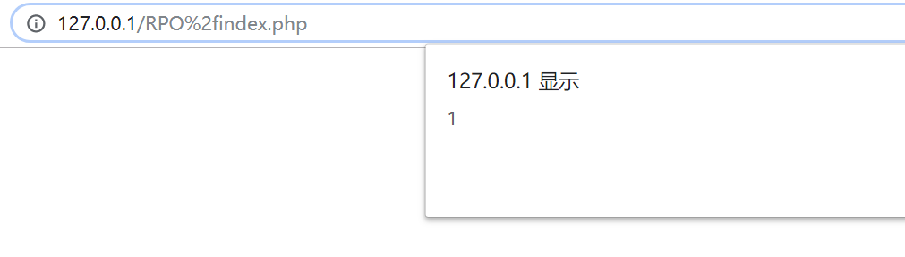
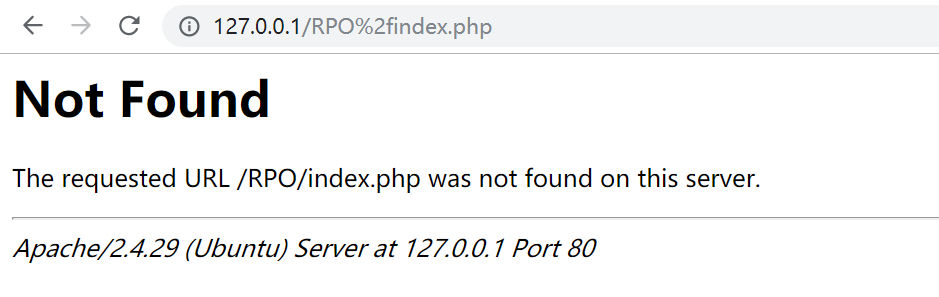
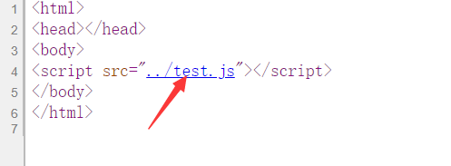
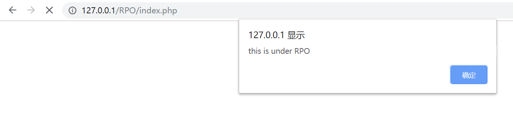
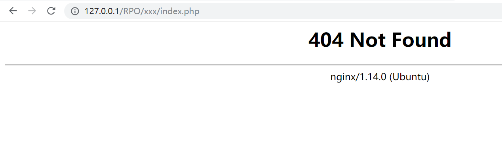
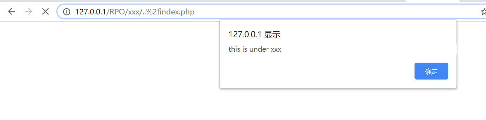
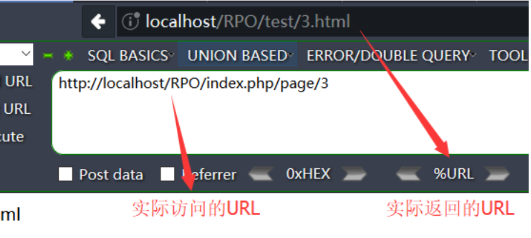

RPO的全称为Relative Path Overwrite,也就是相对路径覆盖，利用客户端和服务端的差异，通过相对路径来引入我们想要的js或者css文件，从而实现某种攻击。
就目前来看此攻击方法依赖于浏览器和网络服务器的反应，基于服务器的Web缓存技术和配置差异，以及服务器和客户端浏览器的解析差异，利用前端代码中加载的css/js的相对路径来加载其他文件，最终浏览器将服务器返回的不是css/js的文件当做css/js来解析，从而导致XSS，信息泄露等漏洞产生。
利用条件
①Apache 配置错误导致AllowEncodedSlashes这个选项开启（对Apache来说默认情况下 AllowEncodedSlashes 这个选项是关闭的），或者nginx服务器。
②存在相对路径的js或者css的引用
这里使用WSL+apache2/nginx+php进行测试
第一个条件
当我们访问http://127.0.0.1/RPO%2findex.php时，不同服务器有如下表现
Nginx

nginx服务器可以正常访问
Apache2

apache2默认配置无法访问
第二个条件
存在相对路径的引用，如下

结合条件产生RPO漏洞
简单复现
现在情况是这样的，我们在RPO目录下有这样的一个index.php文件
1 | <html> |
以及一个test.js文件如下
1 | alert("this is under RPO"); |
同时RPO文件夹下还有一个文件夹xxx,该文件夹下存在test.js如下
1 | alert("this is under xxx"); |
当我们访问http://127.0.0.1/RPO/index.php时，自然而然弹出了RPO文件夹下的test.js

而我们访问http://127.0.0.1/RPO/xxx/index.php,很显然xxx文件夹下是没有index.php这个文件的

但是当我们访问http://127.0.0.1/RPO/xxx/..%2findex.php时却出现了

RPO文件夹下的index.php竟然读取了xxx文件夹下的test.js！！！
攻击过程
我们向服务器请求URL：
http://127.0.0.1/RPO/xxx/..%2findex.php服务器见多识广，看到的是：
http://127.0.0.1/RPO/xxx/../index.php
也就是返回了http://127.0.0.1/RPO/index.php浏览器比较呆萌，看到的是:
http://127.0.0.1/RPO/xxx/..%2findex.php
这里浏览器认为..%2findex.php是一个文件，并且执行了这个文件里面的<script>,想要读取当前同目录下的test.js。而浏览器认为的路径是http://127.0.0.1/RPO/xxx/,因此我们成功读取到了xxx文件夹下test.js并当作js解析。
RPO的任意文件读取
除了跨目录读取js，RPO漏洞还可以实现任意文件读取，前提是网站必须支持URL重写。
什么是url重写呢，URL重写就是首先获得一个进入的URL请求然后把它重新写成网站可以处理的另一个URL的过程。举个例子：（这里没有成功复现出来，就暂时先用别人的图来讲了，侵删，，我太菜了）

这里的index.php代码如下：
1 |
|
这里其实还开启了pathinfo模式，url中的/page/3相当于?page=3,然后通过Header转到新的url。这样看起来url会更加和谐，但是问题也出在这里。
当我们请求http://localhost/RPO/index.php/page%2f..%2f..%2findex.php时，浏览器想要加载同目录下的3.js:http://localhost/RPO/index.php/3.js，在浏览器眼里这就等同于http://localhost/RPO/index.php，这就把index.php当作js处理了，然后我们就可以f12直接查看资源获得index.php的源码了，css文件的包容性比较好，可以读取更多类型的文件